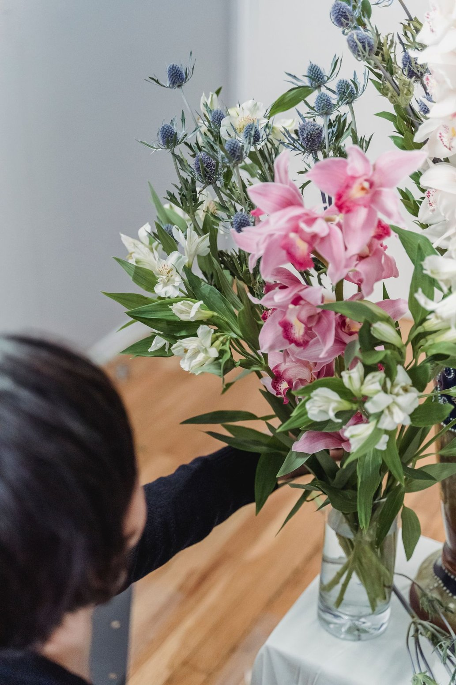
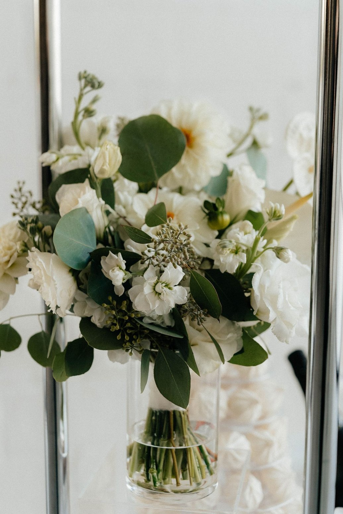

맞춤형 원예치료
참여자의 특성과 필요를 고려하여 꽃과 식물을 활용하는 맞춤형 원예치료 활동을 지향합니다.
PERSONALIZED HORTICULTURAL THERAPY
꽃으로 아픔을 어루만지고, 식물과 함께 마음의 변화를 만납니다. 한 사람 한 사람의 속도와 필요를 생각하는 자람원예치료연구소입니다.

01 / ABOUT JARAM
서로 다른 식물이 각자의 모습으로 자라듯, 우리에게도 저마다의 속도와 시간이 있습니다.
자람원예치료연구소는 식물과 함께하는 경험을 통해 자신을 표현하고, 사람과 자연의 관계를 새롭게 발견하는 시간을 지향합니다. 원예치료 컨설팅과 대상자별 맞춤형 원예치료를 중심으로 활동합니다.
꽃으로 아픔을 어루만지는
복지원예슈퍼바이저

* 분위기 연출 사진 / 실제 연구소 활동 사진 아님02 / WHAT WE DO
식물의 생명력을 매개로, 참여 대상과 목적에 맞는 원예 활동을 생각합니다.
참여자의 특성과 필요를 고려하여 꽃과 식물을 활용하는 맞춤형 원예치료 활동을 지향합니다.
초등교과 연계 원예활동을 비롯해 식물을 통해 관찰하고 표현하며 배울 수 있는 교육 콘텐츠를 소개합니다.
원예치료 활동을 준비하는 기관과 단체가 프로그램의 목적과 참여 대상을 검토할 수 있도록 상담합니다.
프로그램의 대상·세부 내용·운영 가능 여부는 문의를 통해 확인해 주세요.
03 / HORTICULTURAL ACTIVITY KITS
원예 활동 키트 · 안내직접 식물을 만지고 가꾸는 원예활동을 집과 교육 현장에서 이어가고 싶으신가요? 원예키트 관련 문의와 제안을 접수할 수 있도록 안내합니다.
키트 관련 상담원하는 원예활동 주제와 용도에 대해 문의해 주세요.
상세 정보는 별도 확인현재 제품명, 구성품, 가격, 재고, 판매처 정보는 공식 공개자료로 확인되지 않았습니다.
외부 문의 페이지 연결제안 및 문의 버튼은 사용자가 지정한 인포크비즈니스 제안 양식으로 이동합니다.
※ 상품별 구매 가능 여부는 확인되지 않았으며, 아래 이미지는 실제 상품 사진이 아닌 원예활동 테마 그래픽입니다.
04 / VERIFIED ACTIVITIES
원예치료복지협회, 학술정보, 출판사에 기록된 실제 이력입니다. 각 항목을 선택하면 원문 출처로 연결됩니다.
확인 가능한 사실만 기록했습니다. 단체 경진대회 수상은 참여 팀 기준으로 표기했으며, 출판된 교육 주제는 실제 현장 운영 사례와 구분했습니다.
제8회 대한민국 도시농업박람회에서 열린 대회에서 유미리·서경숙 공동 참여 6팀이 최우수작으로 선정되었습니다. 협회 발표에 따르면 충청북도 도지사상에 해당합니다.
한국원예치료복지협회 발표 원문같은 대회에서 서경숙·유미리·이정자 공동 참여 4팀이 장려작으로 선정되었습니다. 동일 인물이 포함된 별도 출품팀의 수상 기록입니다.
한국원예치료복지협회 발표 원문한국원예치료복지협회 제235회 온라인 워크숍 강사로 소개되었습니다. 2020년 온라인 워크숍 분류표에 강사와 강의 주제가 수록되어 있습니다.
한국원예치료복지협회 뉴스레터서울 aT센터에서 열린 제1회 경진대회에서 유미리·이정자·서경숙 공동 참여 8팀이 입선작에 선정되었습니다.
한국원예치료복지협회 발표 원문유미리·이영기·손장호 공동 저서입니다. 초등교과 연계 원예교육에 관한 이론과 12가지 활동 주제, 활동지를 수록했습니다.
도서출판 교우미디어 원문2008년 5~8월 유아 40명을 대상으로 총 20회 프로그램을 연구했습니다. 연구 결과는 2010년 건국대학교 원예치료학 석사학위논문에 수록되었습니다.
RISS 학위논문 서지·초록한국원예치료복지협회가 발표한 2017년 상반기 자격심사 합격자 명단의 복지원예 슈퍼바이저 항목에 유미리 이름이 기재되어 있습니다.
한국원예치료복지협회 공고Instagram의 개별 게시물 전문과 활동 사진은 공개 웹 접근에서 확인되지 않아 여기에는 임의로 옮기지 않았습니다. 최신 현장 사진과 기록은 공식 계정에서 확인해 주세요.
인스타그램 활동 보기05 / EDUCATION CONTENTS
『행복 자람 원예교실』에 실제로 수록된 원예치료교육 프로그램 목차를 바탕으로 구성했습니다.
교육 콘텐츠 안내 · 아래 항목은 출판 도서의 수록 주제입니다. 각 활동의 현재 운영 여부나 연구소의 실제 진행 횟수를 의미하지 않습니다.
 실제 도서 표지 · 이미지 출처: 알라딘
실제 도서 표지 · 이미지 출처: 알라딘
06 / PUBLICATION
초등교과 연계 원예교육 저서
초등학교 교육과정에 원예활동을 접목한 교육 자료입니다. 공감과 배려, 자연과의 공존을 주제로 프로그램 개발 과정과 12가지 원예활동, 활동지를 소개합니다.
07 / PEOPLE BEHIND JARAM
원예치료에 대한 전문적 배경과 교육 현장의 경험을 바탕으로 사람과 식물의 관계를 고민합니다.
소장 이력은 2022년 발행 도서의 출판사 저자 소개에 근거합니다. 현재 직책·활동 여부는 별도 확인이 필요합니다.
08 / JARAM JOURNAL
다양한 꽃과 식물이 함께하는 자람의 일상은 인스타그램에서 이어집니다.

A MOMENT TO GROW연구소의 실제 활동 소식과 일상 사진은 공식 인스타그램에서 확인하실 수 있습니다.
@jaram_miri 방문하기※ 이 페이지의 꽃 사진은 분위기 연출용 스톡 사진이며, 실제 자람원예치료연구소의 활동 실적을 나타내지 않습니다.
09 / LET'S GROW TOGETHER
원예치료, 원예교육, 프로그램 기획에 관한 문의를 남겨주세요. 문의는 외부 상담 양식으로 연결됩니다.
문의 남기기 외부 문의 페이지가 새 창으로 열립니다.